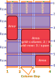

CSS Grid
In a nutshell
- Goal: Setting page layouts with minimal css code. How?
- Establishes a grid with vertical and horizontal guidelines.
- Children are placed in areas defined by two pairs of those lines.
- The placement of the lines can be fixed, relative, flexible or adaptable to the content.
- Supported by all major browsers since 2017 (when Edge catch up)
- Obsoletes css frameworks like bootstrap grid. They are more powerfull without utility classes.
Grids vs Flexbox
Although many people was using Flexbox to build grids, Flexbox still is relevant as it has its own niche.
What are the differences?
- Dimensionality:
- A grid container controls child placement in two dimensions,
- A flexbox container just controls the children flow in one dimension.
- Yes, flexbox can wrap and constrain sizes to get a grid. It is just harder and not the primary goal.
- Top down vs bottom up:
- With grid you set the frame and the children fit.
- With flexbox, the children you include mandate their final layout.
- Yes, again. Grid can adapt to children, and flexbox can constraint them, but...
Sane defaults for your purpose saves time. Choose the tool closer to your purpose.
Grids vs Bootstrap (and similar css grid frameworks)
- Native support, less css bloat
- Not limited to 12 columns system.
- Mind blowing simple setup.
- Grid assignment is done in css, bye utility classes bloat.
- HTML just has semantic classes, css places each semantic block.
- Responsive bloat also controlled in css with media queries.
- Ie. Html says: This is a "fancy-header". CSS says: In mobile the "fancy-header" goes in this area, while in tablet, we are using this other grid, and it goes in this other area.
Glossary
- Grid: A set of horizontal and vertical lines to organize the layout of children elements within a container
- Track: Space between two parallel contiguous lines. Just a generic for:
- Column: Vertical track
- Row: Horizontal track
- The final layout is determined by the size of the tracks
- Area: Square delimited by two vertical and two horizontal lines of the grid
- An area can span one or several tracks in each direction
- The placement target of a children is an area.
- Gap: space between tracks

Defining the grid
The grid is defined by defining the sizes of the tracks (columns and rows)
Each of those sizes can be defined either:
- fixed (
rem,px...) - relative (
%,vh...) (to the parent, viewport...) - flexible (
fr) taking a proportional fraction of the remaining size - content dependant (
max-content,min-content...) (see below) - a mixture of the above with
max,min,calc...
Notice the repeat function. It just repeat as a macro the last parameter.
In this case, will expand as 1fr 2fr 1fr 2fr 1fr 2fr
Placing items
Once we have stablished the grid, the next step is to place the children.
We use as reference the divisions between tracks, which are numbered in each direction by read order: 1, 2, 3...
Children can be placed by indicating an area defined by two vertical and two horizontal divisions.
.mychild {
grid-row: 1 / 5; /* from the first to the fifth horizontal line */
grid-column: 2 / 4; /* from the second to the fourth vertical line */
}
.mychild {
grid-row-start: 1; /* from the first horizontal line */
grid-row-end: 5; /* to the fifth horizontal line */
grid-column-start: 2; /* from the second vertical line */
grid-column-end: 4; /* to the fourth vertical line */
}
Span
The end line can be also specified as an span. The same area could be expressed like:
.mychild {
grid-row: 1 / span 4; /* from the first horizontal line span 4 rows */
grid-column: 2 / span 2; /* from the second vertical line span 2 columns */
}
Naming lines and areas
Using numbers to refer the separators can lead to maintenance problems on the long term. Naming track divisions can ease the reading and maintenance of the css.
You can name the track lines with [square brackets] when you specify the tamplate:
.container {
grid-template-columns: [sidebar-start] 20rem [sidebar-end content-start] 1fr [content-end] 1f;
}
Notice that the second line has two names enclosed in the brackets and space separated:
sidebar-end and content-start.
This means that you can use either one to refer the same line..
We can use any name, but if you name a line xxxx-start or xxxx-end,
it will implicitly define an area named xxxx.
This makes using grid-area much easier.
So, using the former definition, two named areas are defined, and we could just state:
Using areas like this is quite direct. But still, defining the start and end lines is quite tedious. There is another way of defining the areas:
.container {
grid-template-areas:
'header header header'
'sidebar content ..... '
'footer footer footer'
;
}
Each line is a row and each word is a column within the row. If you do not use a cell for any area you can use one or more dots like in the example.
As defining track separators as xxxx-start/end implicitly defines xxxx area,
defining xxxxx area also implicitly defines the track separator names xxxx-start/end.
Implicit placement (auto)
When some of the grid-area sub-properties
(grid-column/row-start/end)
is not defined for a grid children,
it takes, by default, the value auto.
Notice that auto has different meanings for end and start properties.
But, for both, has the common sense effect
of filling successive cells in reading order.
- for
grid-column/row-end,automeansspan 1, just one track size. - for
grid-column/row-start,automeans: start at the first available cell in flow order.
So, what is the so called flow order?
By default, flow order is reading order
(in latin ltr languages, left to right and then up down).
This is controlled by the grid container property grid-auto-flow.
You can specify grid-auto-flow: row to fill column wise and within the column row-wise.
When placing auto children, the standard flow will skip any starting cell which has no room for the requested span, because the track ends or because an explicit children is already using it.
The auto flow is determined by the grid-auto-flow property of the container.
row, the default, means that auto children will take the next available area in the row and if no
By default it is row, which means that auto placed children are placed:
- Taking the next empty area in reading order that fits the requested span.
-
will take the next space to fit in the row in reading order and then the next.
Adding children beyond the grid
When children exhaust areas defined in the grid, new rows will be created implicitly.
The default size You can expliciitly size those tracks with:
/ Successive rows and columns get this with / TODO: how to grow in columns? -> grid-auto-flowBy default items take the next grid cell available
Explicit positioning can be set by specifying the vertical
grid-template-columns: 20rem 1fr 1f
grid-template-rows: 4rem repeat(3, 1fr 2fr)
grid-auto-columns/rows: size size Successive rows and columns get this with
grid-template-rows/columns: subgrid // use parent grid (Firefox only by 2022-07)
align-items: on the parent for the children
align-self: on the children within the parent
start, end, stretch
gap: size [size]
column-gap: size
row-gap: size
// Explicit grid placing
grid-column/row-start: linestart
grid-column/row-end: lineend // absolute
grid-column/row-end: span nlines // relative
grid-column/row: <cells> [[span] <cells>] // negative columns start counting from end
grid-area: rowlinestart columnlinestart rowlineend columnlineend
// The cells get occupied and the implicit placed elements jump those
// You can name lines between tracks
grid-template-columns: [main-start] 20rem [content-start] 1fr [content-end] 1f [main-end]
// then in the childs
grid-column: content-start / content-end
// if you named the lines with and start and end suffixes
grid-area: content
grid-auto-rows: size // creates rows as needed of the provided size
grid-template-areas: 'area1 area2 area3' 'area4 . area3'
// each quoted is a row.
// dot (or multiple dots without spaces) is a place holder
Blocks absolutely positioned into a relative pos grid container are positioned relative to the grid container and not put on the flow.
If you name a line xxxx-start or xxxx-end it will implicitly
define an area named xxxx and the other way around:
If you name an area xxxx you will implicitly define
lines xxxx-start and xxxx-end foreach direction.
- You can specify two ids for the line like
[id1 id2] - If you use a line name multiple times (ie. using repeat) you can specify which one by adding a number after it 'content-col 2`.
- Likewise you can span just counting instances of a name
span content-col 2
Example: setting up bootstrap 12 columns model
/* This single selector sets it up */
.grid {
display: grid;
gap: 10px;
grid-template-columns: repeat(12, [col-start] 1fr);
}
/* And for example, the tipical header-sides-footer structure */
.footer,
.header {
grid-column: col-start / span 12;
}
.side-1 {
grid-column: col-start / span 2;
grid-row: 2;
}
.content {
grid-column: col-start 2 / span 8;
grid-row: 2;
}
.side-2 {
grid-column: col-start 10 / span 2;
grid-row: 2;
}
grid-auto-rows/columns determines the size of implicitly created columns.
You can specify several values and they will be asigned in loop.
Beside absolute (rem, px...) realative (%,vh,vw...) and flex sizes, there are some cool sizes we can use.
auto: (The default value)
As minimum, the maximum minimal size of the track.
As maximum, max-content.
min/max-content Adapts to the smaller/bigger content requirement in the track
TODO: Que pasa cuando dos items se definen en la misma celda